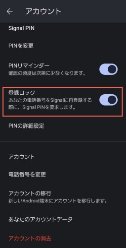

Signal への攻撃手口（ソーシャルエンジニアリング）と防御策

今朝，Bluesky と Mastodon の TL に Signal による長いスレッドが上がっていた。 Bluesky のポストは以下から始まるスレッドである（Mastodon のほうも内容は同じ，多分）。
A response to recent reporting in Germany, in service of clarity and accountability: First, it’s important to be precise when it comes to critical infrastructure like Signal. Signal was not “hacked” — in that our encryption, infrastructure, & the integrity of the app’s code was not compromised. 1/
— Signal (@signal.org) April 28, 2026 at 5:53 AM
ちょっと何言ってるか分からなかったので Kagi Assistant と GitHub Copilot に手伝ってもらいながら調べてみた。
もとになってる報道
Signal に対する攻撃，特に phishing を含むソーシャルエンジニアリングについては以前から言われていて，ドイツ BSI (Bundesamt für Sicherheit in der Informationstechnik) も Signal の利用ガイドラインを公開しているほどだ。
- Germany warns of Signal account attacks targeting high-profile figures
- Signal、国家支援型の巧妙なアカウント乗っ取り攻撃が標的に―ドイツ当局が警告
- BSI - Handlungsleitfaden bei Phishing über den Signal Support
にもかかわらずってことなんだろうなぁ。
Signal による声明の直接のトリガーとなっているのは先週のドイツでの一連の報道のようだ。 発端は DER SPIEGEL の報道：
これは有料記事だが，他メディアでもいくつかあった。
- Was der Angriff auf Signal-Konten für den Bundestag bedeutet | tagesschau.de
- Phishing via Signal: Attacke auf Ministerinnen | taz.de
- Phishing-Angriffe auf Signal: Bundesregierung sieht offenbar Russland hinter Phishing bei Signal | DIE ZEIT
この中では Tagesschau の一連の記事が良さげなので Kagi Assistant に要約してもらった。
ドイツの政界や重要機関を標的としたSignalでの大規模なフィッシング攻撃は，国家が関与するスパイ工作の疑いへと発展しています。
- 被害の規模と対象:
- ドイツ連邦議会のほぼすべての会派の議員が標的となり，ユリア・クレックナー連邦議会議長や，フーベルツ建設相，プリーン家族相といった現職閣僚の被害も確認されています。
- 政治家だけでなく，ジャーナリスト，軍関係者，さらにはNATO関係者も攻撃対象に含まれています。
- 攻撃の手法:
- 攻撃者は「Signalサポート」を装い，偽のセキュリティ警告でユーザーに接触します。
- ユーザーを騙してPINコードを聞き出しアカウントを完全に奪取するか，あるいはQRコードをスキャンさせて攻撃者のデバイスを連携（同期）させることで，チャット内容や連絡先，過去45日分のファイルを盗み見ます。
- 当局の捜査と背後関係:
- ドイツ連邦検察庁は，本件を「諜報員活動（スパイ容疑）」として正式に捜査を開始しました。
- ドイツ治安当局（BfVおよびBSI）は，このキャンペーンが「国家主導のサイバー攻撃者」によるものであり，現在も勢いを増していると警告しています。
- オランダの諜報機関や米国のFBIは，この攻撃の背後にロシアの諜報機関が関与していると特定しています。
- Signal側の見解:
- Signalは，アプリの暗号化やインフラ自体が突破されたわけではなく，あくまでユーザーを欺くソーシャルエンジニアリングによる攻撃であると強調しています。
大体合ってるかなぁ。 ドイツ語はよく分からないので自信がない。
GitHub Copilot が各メディアの報道の違いを表にまとめてくれるというのでやってもらった。
| 媒体 | 位置づけ | 主なポイント | 閲覧性 |
|---|---|---|---|
| DER SPIEGEL | 初報の可能性が高い | 政治家アカウント被害の最初期報道。見出しで「Signal-Hack」と表現 | 本文はSPIEGEL+（有料） |
| Tagesschau | 検証・整理記事 | 「最初にSPIEGELが報じた」と明記。ハックではなくフィッシングという整理が明確 | 無料で読みやすい |
| taz | 補強報道 | 被害対象，政府見解，手口（偽Signal Support）を具体化。SPIEGEL初報への言及あり | 無料 |
| ZEIT | 続報 | 政府・当局側の見方（ロシア関与の可能性）を短く整理 | 一部制限あり（記事により差） |
Signal による声明
というわけで Signal による SNS での声明に戻る。 これについても Kagi Assistant に要約してもらった。
- 攻撃の性質: Signalの暗号化やインフラ自体が「ハッキング」されたわけではありません。実際には，攻撃者が「Signalサポート」を装い，ソーシャルエンジニアリングを用いてユーザーから認証情報を聞き出す巧妙なフィッシング詐欺が発生しています。
- 手口の詳細: 攻撃者は盗んだ情報でアカウントを乗っ取り，登録電話番号を変更します。被害者には「再登録が必要」と信じ込ませて新しいアカウントを作らせることで，乗っ取りに気づかせないようにします。その後，乗っ取ったアカウントを使って被害者の連絡先にさらなる攻撃を仕掛けます。
- Signal側の対応: 今後数週間で，こうした攻撃を阻止するための新機能を導入予定です。
- ユーザーへの推奨事項:
- Signalサポートがメッセージリクエストを送ったり，認証コードやPINを尋ねたりすることはないため，警戒を怠らないこと。
- 保護を強化するため，設定から「登録ロック」を有効にすること。
んー。 これは大体合ってるはず。
「登録ロック」はアプリの設定の「アカウント」セクションにある項目で，電話番号を変更する際に PIN 入力を要求するらしい。

{kind=link}
PIN をばらしちゃったらダメだけどね。 ちなみに Signal の PIN は英字も含めることができる。
Phishing はシステム侵入の手口としてはありふれていて，しかも人間の行動が関与するから完全には防ぎづらい。 故に多層防衛をしていかないと「蟻の一穴」から簡単に class break してしまうことになる。
GitHub Copilot はこうまとめてくれた。
全く以ってそのとおり！
余談だが…
最初の SNS のポストの内容を元に Kagi Assistant と GitHub Copilot に元ネタとなるドイツ報道を調べてもらった。 Kagi Assistant のほうは自前の検索サービスがあり，一発で Tagesschau の記事を引き当てたので問題なかったが， GitHub Copilot はだいぶ難儀していた。
まず DuckDuckGo で調べようとして bot 判定され拒否られる。 そこで Bing に切り替えたのだがノイズが多すぎて見つからなかったようだ。 まぁ， Google を使わなかっただけ偉いと言っておこう（笑）
そんで検索サービスを彷徨うのは一旦諦めて（「検索エンジンが使いづらい」と愚痴ってた。 AI も愚痴るのかw） Bluesky の該当スレッドを API 経由で取得し，そこからようやく「Julia Klöckner（独連邦議会議長の人）」というキーワードを引き当てた。 これを使って Bing で絞り込みをかけた結果，意味のある検索結果を得られたという流れだった。
この GitHub Copilot による一連の作業をチャット上で眺めながら，人間みたいなことをするんだなぁ，と妙なところで感心してしまった。 そんでもって，ネット上の調べ物は Kagi Assistant のもんやねぇ，と思う。
そもそも Web ページを探すのに検索窓を叩いて調べるとかせんやろ，いまどきは。 ノイズに塗れた Web で，かつ主要検索サービスがメタクソ化する状況で「行きたい場所」に到達するには，結局 AI を使わなきゃ無理なのよ。 特に今回みたいな漠然とした内容で知らない言語圏の情報を探す場合は。
つまり，もはや AI に認知してもらえないサイトやページは存在しないのと同じで，安易に拒否してるだけでは大海に取り残された某島の生物のようになってしまうだろう。
参考

- セキュリティはなぜやぶられたのか
- ブルース・シュナイアー (著), 井口 耕二 (翻訳)
- 日経BP 2007-02-15
- 単行本
- 4822283100 (ASIN), 9784822283100 (EAN), 4822283100 (ISBN)
- 評価
原書のタイトルが “Beyond Fear: Thinking Sensibly About Security in an Uncertain World” なのに対して日本語タイトルがどうしようもなくヘボいが中身は名著。とりあえず読んどきなはれ。ゼロ年代当時 9.11 およびその後の米国のセキュリティ政策と深く関連している内容なので，そのへんを加味して読むとよい。